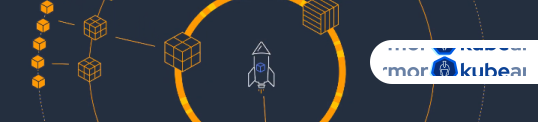

|
NEWSLETTER Zero Trust Cloud-Native Application ProtectionMonthly UpdateAugust 2022 |
|

KubeArmor on AWS BottlerocketRahul Jadhav, co-founder of Accuknox, showcases the capabilities of KubeArmor on Bottlerocket. It is an operating system designed for hosting containers. Watch Video |
Accuknox - Zero Trust CNAPP (Cloud Native Application Protection Platform) - eBookRead our comprehensive eBook that emphasises key elements of Zero Trust and more. Download NowKubeArmor supports IBM Open Horizon Edge Security
|
How KubeArmor improves on AWS Bottlerocket Security?KubeArmor provides enhanced security by using BPF-LSM to protect Bottlerocket containers from within. By limiting system behavior with respect to Files, Processes & Network connections. Read more |
CNCF Kubernetes Policy Management WhitepaperAccuknox’s contribution to the CNCF Kubernetes policy management was recognized. Learn why Kubernetes Policy Management is becoming obligatory for security? Download Now |
|
|
EventsAccuKnox’s presentation at KubeCon & CloudNative North America 2022 (October 24-28)Barun will talk about how KubeArmor leverages LSM superpowers to abstract away the complexities to help protect modern cloud native workloads. Read MoreZero Trust and Runtime Security for Edge at ONE Summit 2022 (November 15-16)Rahul will focus on best practices, technical challenges, and business opportunities across Zero Trust Runtime Security for IoT Edge workloads. Read More |
Industry Buzz:Kubernetes releases latest v1.25 - CombinerThis release includes a total of 40 enhancements. It also has two features being deprecated/removed. Read moreKyverno moves to the CNCF Incubator"As Kubernetes adoption grows, policies have become critical to ensure security, governance, and compliance", said Jim Bugwadia, co-creator of Kyverno. Read moreKubeArmor to Protect IoT Edge WorkloadsWith v0.5.5 release, KubeArmor now supports standalone un-orchestrated containers. KubeArmor in this mode supports both enforcement and observability of the host and the containers running on it. Read more |
AccuKnox is a core contributor to CNCF, Kubernetes Runtime Security Platform, KubeArmor.Visit KubeArmor |
About the EditorNat NatrajCEO, Co-Founder, Business - AccuKnox Nat Natraj is the Co-Founder, and CEO of AccuKnox, a leader in the Zero Trust Cloud Security space. Natraj has over 25 years of experience in leading high-growth Enterprise Software companies and helping them deliver differentiated CyberSecurity and SAAS solutions to Global 1000 organizations. |
| Unsubscribe |
|
Accuknox provides Runtime Kubernetes Security Accuknox © 2022. All Rights Reserved. |